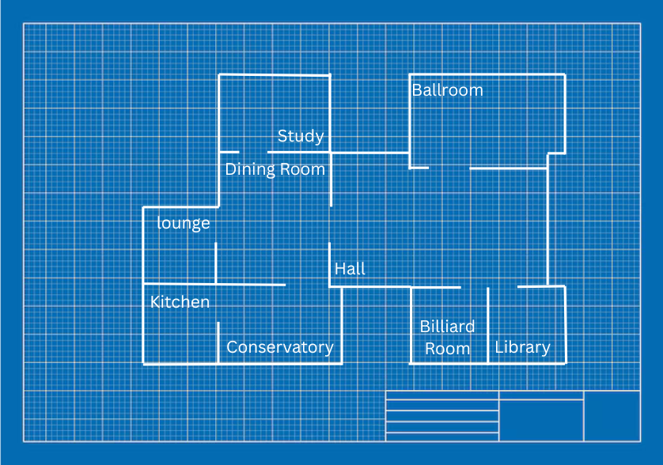

RWA Robotics : Édition Clue
Section SuivanteBienvenue sur notre site web
Vous devrez faire appel à votre détective intérieur et suivre les indices pour attraper le meurtrier. Découvrez nos thèmes mystérieux, notre école, et ce qui donne vie à notre équipe de robotique. Allez-vous attraper l’assassin?
Notre École
Similaire au véritable jeu de « Clue », Royal West Academy a de nouvelles aventures pour tout-le-monde. L’école, localisée à Montréal Ouest, a plus de 20 cours différents couvrant un large éventail de sujets comme les beaux-arts et la biologie. De plus, il y a plus de 100 activités parascolaires à découvrir et un tas de voyages amusants! Avec toutes ses opportunités d’apprendre, de découvrir ainsi que de grandir, chaque étudiant reçoit une opportunité de vivre une expérience unique et inoubliable formée à leurs intérêts et leurs besoins.
À propos de Clue
« Clue » est un jeu de société, de mystère et de meurtre très populaire. Originellement nommé « Meurte! », le but du jeu est de découvrir qui à tué Monsieur Boddy. Au long du jeu, les joueurs sont permis de poser 3 questions aux autres et d'utiliser leur esprit critique pour déduire 3 choses: l’identité du meurtrier, l'objet utilisé pour accomplir le meurtre et la scène de crime. Lorsqu’un joueur croit avoir la réponse aux trois questions, il doit déplacer son pion au centre du plateau et doit soumettre sa supposition. Le premier joueur à avoir raison gagne la partie.

Un plateau de jeu Clue datant de 1965

L'inventeur du jeu Clue, Anthony E. Pratt

L'inventeur du jeu Clue jouant avec sa famille
Clue Édition RWA
Notre Équipe
Règles du Møduel
Pièces du jeu
Il existe trois types de pièces sur le terrain :- Ventilateur
- Noyau
- Turbine

- Pièces bleues/jaunes → pièces fonctionnelles
- Pièces rouges → pièces cassées (utilisables uniquement dans les stations de réparation)
IMPORTANT !
Les robots ne peuvent transporter qu'une seule pièce à la fois, soit de la couleur de leur équipe, soit rouge. Toute pièce qui roule hors du terrain est hors jeu pour le reste de la manche.Comment marquer des points
Marquage des points pour les moteurs
Placez la pièce de la couleur de votre équipe dans un moteur :- 1 pièce → 50 points
- 2 pièces → 100 points
- 3 pièces → 250 points
Station de réparation
Placez une pièce rouge dans une station de réparation :- Pièce rouge → 30 points
Zone des pièces de rechange
Empilez les pièces de jeu de votre équipe dans la zone des pièces de rechange :- Chaque pièce → 40 points
Bonus de fin de partie
À la fin de chaque manche, deux bonus sont appliqués : Bonus pour la pile la plus haute ○ Équipe avec la pile la plus haute → +60 % ○ En cas d'égalité → +30 % chacunFair-play et pénalités
Afin de garantir l'équité et la sécurité des manches, les règles suivantes s'appliquent :- Vous ne pouvez pas bloquer plus d'un moteur ou d'une station de réparation à la fois.
- Vous ne pouvez pas piéger, heurter ou écraser d'autres robots.
- Lorsque le temps est écoulé, le jeu se termine et les points sont calculés.
- Si votre robot cesse de fonctionner, votre équipe perd 10 % de son score total toutes les 30 secondes pendant lesquelles le robot reste inactif.
- Demander l'aide d'un officiel entraînera une pénalité de 20 % du score total pour la manche
- Transporter plus d'une pièce à la fois entraînera une pénalité de 20 % pour la manche
- Lancer intentionnellement des pièces hors du terrain entraînera une pénalité de 40 % pour la manche
Journal de l'équipe
Découvrez le parcours de chaque équipe depuis novembre...
Tutoriel
Film
Qui a fait ça?
C'est le moment que nous attendions tous. Qui a tué notre mentor ? Vous avez trouvé le meurtrier, vous avez l'arme, attendez... dans quelle pièce a-t-il été assassiné ? Si vous revenez sur chaque section du site web (à propos de nous, liste des membres, journal, etc.), vous remarquerez que chacune d'entre elles a pour thème une pièce, mais qu'il en manque une. La pièce manquante vous donnera la pièce manquante du puzzle. Une fois que vous êtes suffisamment sûr de votre réponse, sélectionnez une carte de chaque type et soumettez votre réponse pour la révélation. Il peut être plus facile de trouver la pièce si vous modifiez l'opacité. Si vous ne savez pas quelle pièce est laquelle, n'oubliez pas de consulter les options d'image pour les cartes de pièce plus bas.
Droit d'auteur
La licence ClueTM ®, les personnages, les logiciels, les livres de règles, la propriété intellectuelle et les illustrations, ainsi que tous les autres actifs associés, y compris, mais sans s'y limiter, toutes les productions commerciales et non commerciales de Clue®, sont protégés par le droit d'auteur américain. Copyright ©
En vertu du « Titre 17 du Code des États-Unis d'Amérique sur le droit d'auteur et la protection contre la contrefaçon ».
(Copyright© 1949, renouvelé en 2020)
Tous les matériaux de production sont la propriété exclusive de notre société (Hasbro, Parker Brothers, Enterprises), marque déposée ™ et copyright © 2020 Hasbros Enterprises, L.P. Tous droits réservés.
Utilisation de l'IA
Notre site web utilise très peu l'IA, principalement pour la vérification des bogues et des erreurs. Pour les styles CSS pour lesquels nous avions besoin de définitions ou de tailles spécifiques, nous lui avons demandé de nous fournir des informations et une aide au formatage. De plus, pour la section consacrée aux règles du jeu, l'IA a été utilisée pour donner un aperçu général avant que nous ne remplacions la plupart des règles à la main.